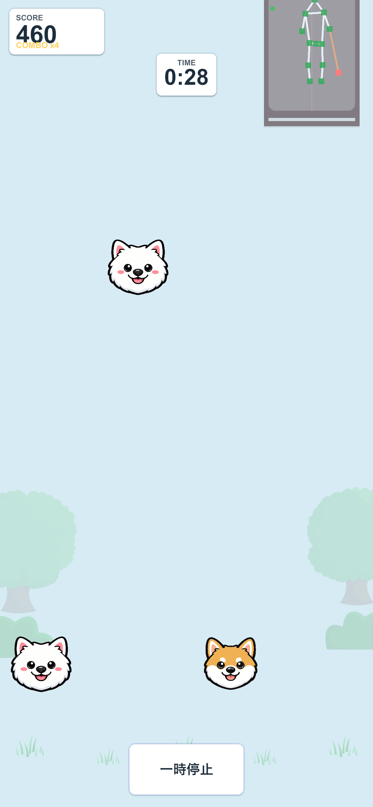
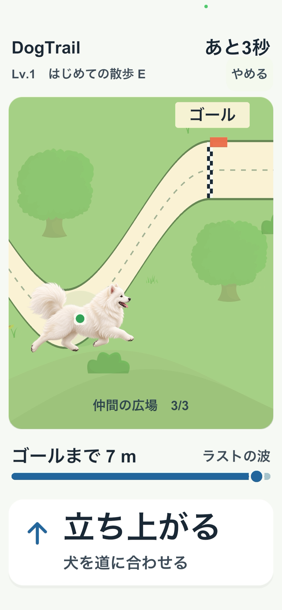
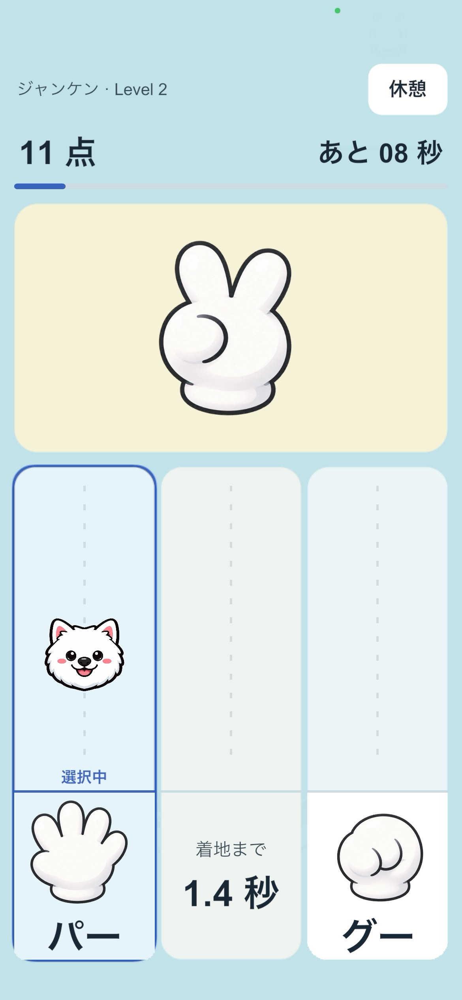

VERSION 2.4.0
Play with dogs.
Get moving.
Step to the side. Squat at your own pace. Your movements control the dogs in three short games for iPhone and iPad.
WanMove: Exergames with Dogs is the English App Store name of わんムーブ, formerly called DogDrop.
Version 2.4.0 adds Paw Remote for menu selection from a distance. Show your palm, move to a button and make a fist to choose. Touch controls remain available. Learn about Paw Remote.
Camera images and body/hand-joint coordinates are processed on your device. They are not saved or sent.
A general movement game. It is not designed or validated for medical care or rehabilitation.



Gameplay examples show earlier Japanese releases.
QUICK START
Short games. Simple moves.
NEW IN 2.4.0 · PAW REMOTE
Choose menus without stepping back to the screen.
Once your device is in place, use hand movements to choose supported buttons. Blue is your left hand; orange is your right. Use whichever hand feels comfortable.
- 1
Show your palm
Face your palm toward the screen and hold it briefly until a paw appears.
- 2
Move to a button
Move your hand to position the paw. Wait for the button outline to light.
- 3
Make a fist to choose
Keep your hand in place and make a fist. Open the same hand before the next selection.
Use supported screens, including game selection, settings, guides, practice completion and results. Gameplay still uses steps and squats.
An introduction, optional Paw Remote practice and Japanese/English voice prompts help you get started. Turn the selection click sound on or off independently of voice guidance.
See the guide and practice instructions.CHOOSE YOUR GAME
What will you play today?
Three games, each with Levels 1–3. Start at Level 1 and find a comfortable pace.
SIDE STEPS + SQUATS · 1 MINUTE
DogDrop
Match dogs. Build your score.
Each side step moves the dog one lane. A comfortable squat makes it drop faster. Guide it to the same breed below.
- New players unlock Levels 2 and 3 in order, starting at Level 1
- Review your score, steps and squats
SQUATS · ABOUT 1 MINUTE
DogTrail
Follow the path to the finish.
Squat to move the dog down, and stand to move it up. Keep the marker on its body inside the path, using your comfortable range of movement.
- Three levels, six patterns per level
- Aim for bronze, silver and gold medals
SIDE STEPS · 1 MINUTE
Cogni Drop
Answer with a step.
Read a rock-paper-scissors or math question. Step toward the correct answer to move the falling dog into that lane.
- Three rules for rock-paper-scissors and three math tasks
- Review your score and average answer time
BEFORE YOU PLAY
Get ready in three steps.
On first use, allow camera access and choose whether to share optional usage data.
- 1
Choose a game
Choose a game and follow its first-time guide to settings. Reopen "How to play" or "Try the moves" from settings at any time.
- 2
Set up safely
Place your device securely at about waist height, with its screen facing you. Check the floor and leave clear space to either side and behind you.
- 3
Get in position
Start about 1.5 m away and fit your whole body in view. Follow posture or squat calibration, then any required practice or short foot-return check.
AT YOUR OWN PACE
A little movement, your way.
Enjoy short games with the dogs and look back at your play records.
DogDrop and Cogni Drop last one minute; DogTrail takes about one minute. Setup and practice take additional time.
You do not need to squat deeply. Stop if you feel pain or become unwell.
See your play count and time by day, week, month and year, separately for each game.
Play history stays on your device. Sharing usage data is optional.
Your first minute with the dogs.
Download WanMove for iPhone or iPad from the Japan App Store.